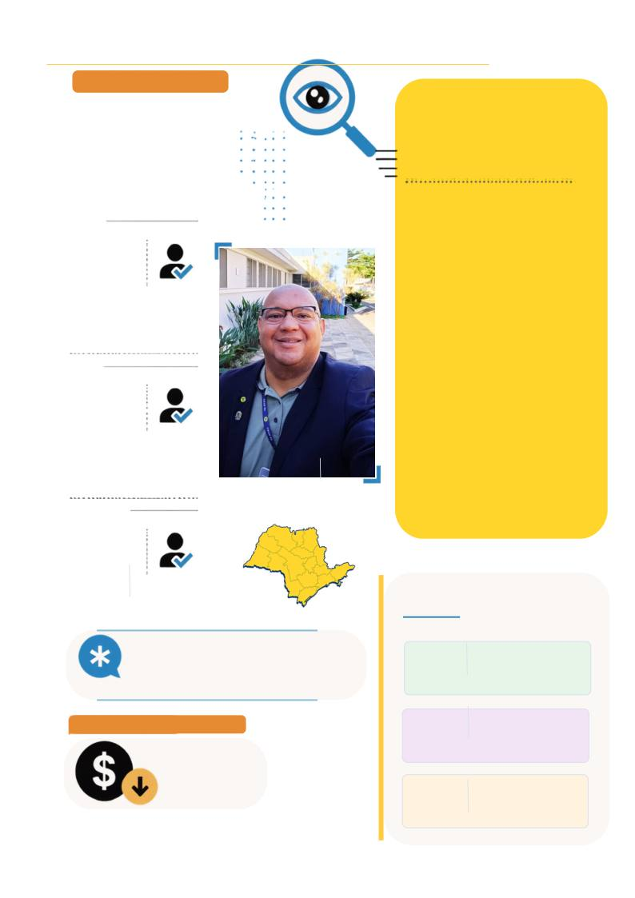

AÇÕES INSTITUCIONAIS
JUNHO
JULHO
AGOSTO *
profissionais
inspecionados
INSPEÇÕES
EM FOCO
Dados detalhados do período
JUN–AUG 2026
243
visitas
1.778
profissionais
inspecionados
244
visitas
1.982
116
OBSERVAÇÃO – AGOSTO
Os dados de agosto são parciais, pois o
mês não havia sido concluído até o
fechamento da revista. Atualizaremos
esses dados na próxima edição.
BAIXAS E SUSPENSÕES - JUN/JUL
730
ALÉM DA IMAGEM · CORED-SP · CRTR-SP
27
S E Ç Ã O I N S T I T U C I O N A L - B O L E T I M I N F O R M A T I V O
73 BAIXAS
196 SUSPENSÕES
Wener - Um dos agentes
de Fiscalização
379
Certificados SATR
DADOS DO SETOR DE ÉTICA
Auto de Infração
Rep. Sanitárias
1
Processo em fase de
sindicância
6
Denúncias
encaminhadas ao
COREFI
Rep. Trabalhistas
11
Certidões éticas
emitidas
🔎 TRANSPARÊNCIA E
GESTÃO EM PAUTA!
As contas de 2025 do CRTR-SP
foram aprovadas com ressalvas,
após a Comissão de Tomada de
Contas apontar irregularidades e
recomendar novos procedimentos
de apuração e auditoria. O
relatório também destaca medidas
adotadas pela atual gestão para
fortalecer o controle, a
transparência e a segurança na
gestão dos recursos. Quer entender
o que foi identificado e quais serão
os próximos passos? Acesse a
matéria completa no site
(https://crtrsp.org.br/) do CRTR-
SP e confira todos os detalhes.
PRESTAÇÃO DE CONTAS - 2025